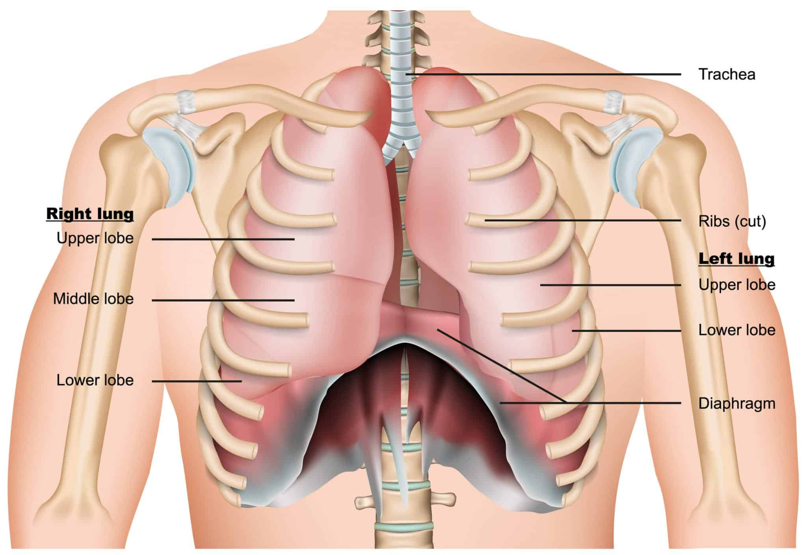

Dr. Md . Yoususf Kabir
Board-Certified Thoracic Surgeon — Expert in lung cancer surgery, VATS, and chest trauma care. Serving patients in Dhaka and nationwide.
- Experienced in minimally invasive thoracic surgery (VATS)
- Multidisciplinary lung cancer care
- Emergency chest trauma services

Key Services

Thoracic Surgery
Open and minimally invasive procedures for lung, esophagus, and chest wall conditions.

Lung Cancer Care
Diagnosis, surgical resection, multidisciplinary planning, and follow-up.

Chest Trauma & Emergency
24/7 management of chest injuries, tube thoracostomy, and urgent interventions.
Patient Testimonials
"Dr. Md. Yousuf Kabir treated my father with compassion and skill. Highly recommended."
— Akash, Dhaka
"Successful VATS procedure and excellent post-op care."
— Samiul, Chattogram
"Professional team and clear explanations at every step."
— Younus, Sylhet